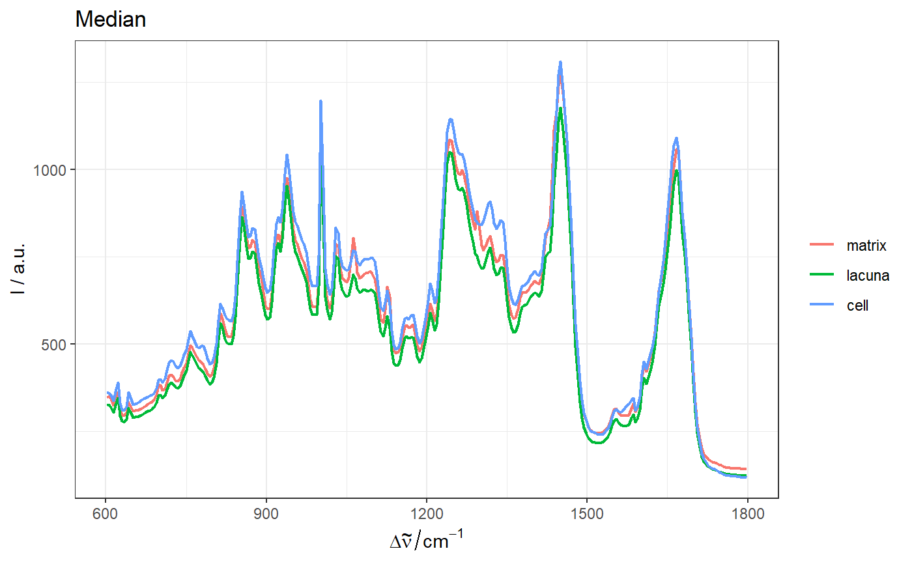
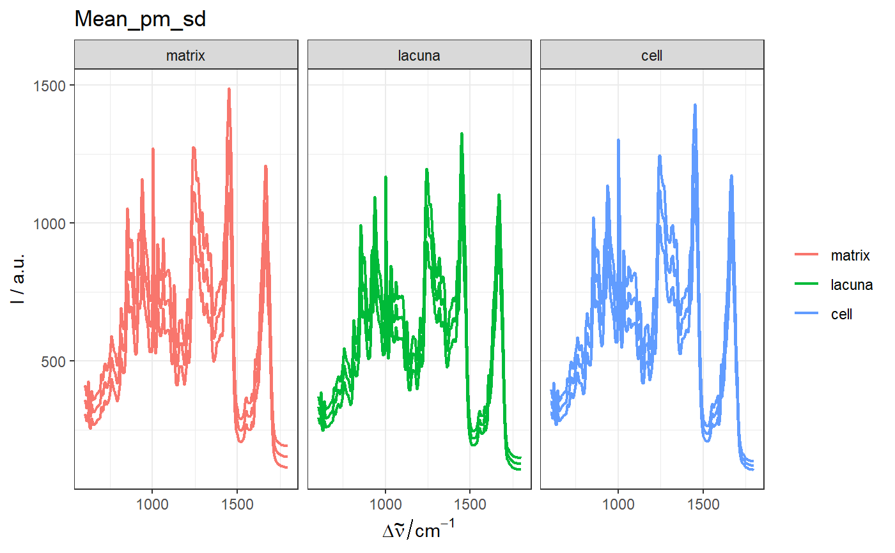
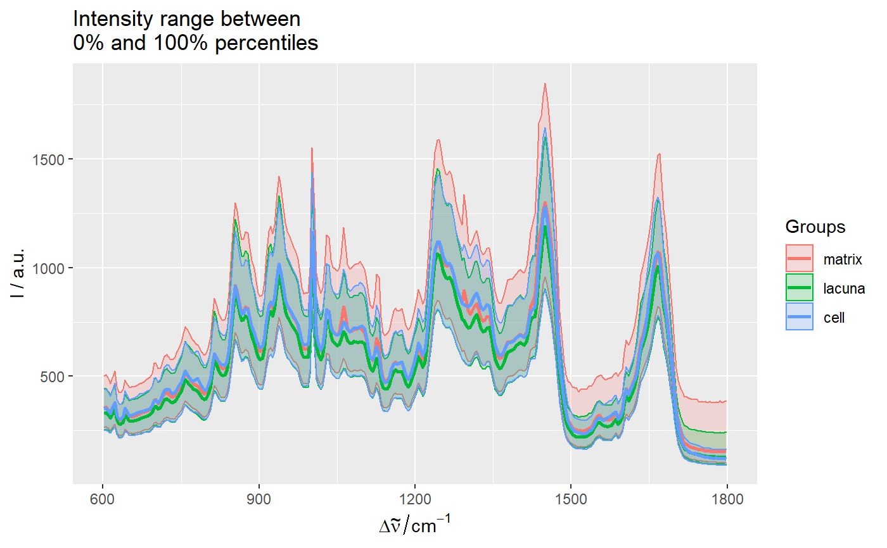

[+] Plot a summary statistic of spectroscopic data by group
qplot_spStat.RdPlot a summary of spectroscopic data in hyperSpec object by group.
The summary statistic internally is generated by either function
spStat or aggregate.
qplot_spStat( sp, by = stop("Argument 'by' is missing."), FUN = stop("Argument 'FUN' is missing."), Title = fCap(as.character(match.call()$FUN)), subTitle = NULL, All = FALSE, fixed.colors = All, All.color = "black", gr.color = c(hyGet_palette(sp), RColorBrewer::brewer.pal(8, "Dark2")), All.linetype = "dashed", gr.linetype = "solid", All.size = 1.1, gr.size = 0.8, legend.title = element_blank(), ..., add = FALSE ) layer_spStat( sp, by = stop("Argument 'by' is missing."), FUN = stop("Argument 'FUN' is missing."), Title = fCap(as.character(match.call()$FUN)), subTitle = NULL, All = FALSE, ..., add = TRUE )
Arguments
| sp | Spectroscopic data
(either a |
|---|---|
| by | A grouping variable (either a vector or a variable name in |
| FUN | A function that calculates one or several summary statistics. |
| Title | The main title of the plot. |
| subTitle | The second line of title, which will be smaller and and in italics. |
| All | Logical. If |
| fixed.colors | - Logical. If |
| All.color | A line color for |
| gr.color | Line colors (a vector) for each level in |
| All.linetype | A line type for |
| gr.linetype | Line types (a vector) for each level in |
| All.size | A line width for |
| gr.size | Line widths (a vector) for each level in |
| legend.title | A title for legend. Default is no title. |
Value
A ggplot object.
More details in package ggplot2.
See also
Other spHelper plots:
check_palette(),
layer_spRangeMean(),
plot_colors(),
plot_hyPalette(),
plot_spCompare(),
plot_spDiff(),
plot_spDistribution(),
qplot_confusion(),
qplot_crosstab(),
qplot_infoDim(),
qplot_kAmp(),
qplot_kSp(),
qplot_prediction(),
qplot_spRangeCenter(),
qplot_spRangeMedian(),
qplot_spc(),
rmExpr(),
rm_stripes(),
stat_chull()
Examples
qplot_spStat(chondro,"clusters",mean)qplot_spStat(chondro,"clusters",mean,All=FALSE)qplot_spStat(chondro,"clusters",mean_sd,All=FALSE) + facet_grid(.~clusters)qplot_spStat(chondro,"clusters",median,All=FALSE, fixed.colors=FALSE)qplot_spStat(chondro,"clusters",median, "My Title")# Make facets with fewer ticks on the x axis: qplot_spStat(chondro,"clusters",mean_pm_sd) + facet_grid(.~clusters) + nTick_x(2)# Add as a layer: qplot_spRange(chondro, "clusters") + layer_spStat(chondro,"clusters", mean, size = 1)